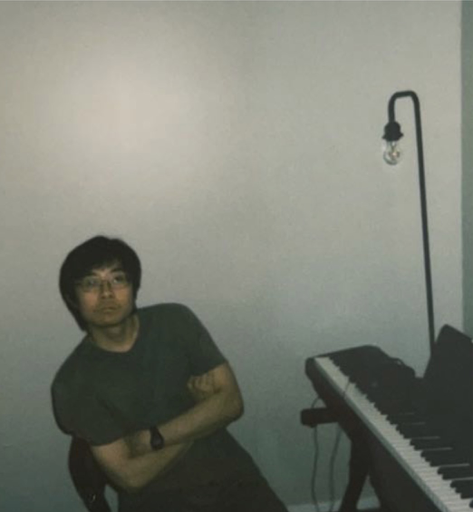

yla877@sfu.ca
Shrum Science Building P8495 · Simon Fraser University · 8888 University Drive · Burnaby · BC · V5A 1S6 · Canada
I am currently an M.Sc. student in mathematics at Simon Fraser University, where I am fortunate to be supervised by Professor
Matt DeVos. Before this, I received a B.E. from Beijing Jiaotong University
and an M.S. from Texas A&M University, both in computer science.
I am interested in algebraic and discrete structures in general. In particular, I am fascinated by understanding
how algebraic language can be applied to interpret phenomena in combinatorics.
I will be applying to Ph.D. positions this fall,
specializing in combinatorial algebraic geometry and algebraic combinatorics.
Things I am (and/or will be) eagerly learning: commutative algebra, algebraic geometry,
algebraic topology, geometry of matroids, tropical geometry, etc.
See here.
I am a Brahmsian and therefore a defender of absolute music in general, but/and I also appreciate most composers from the 18th and 19th centuries you may name, especially Bach, Mozart, and Chopin. Here are two recordings of Brahms's works that I played:
Last updated: 2026-08-03